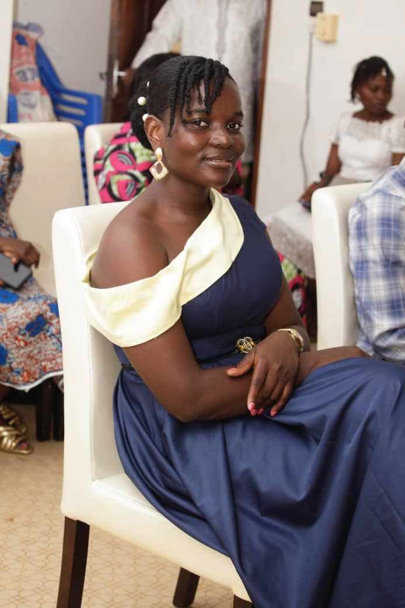

Disponible
pour projets
L'art du Mouvement.
Donner vie à vos récits à travers un montage dynamique et des visuels qui marquent les esprits.

150+
Projets livrés
Donner vie à vos récits à travers un montage dynamique et des visuels qui marquent les esprits.
150+
Projets livrés
Je suis Lucresse Dekpo, une passionnée de
narration visuelle. Je suis apprenante en cadrage et montage vidéo, passionnée par l’audiovisuel et la production vidéo.
Au cours de ma formation, j’ai participé à plusieurs projets pratiques, notamment des reportages, des interviews et la
couverture d’événements. Ces expériences m’ont permis de développer mes compétences en prise de vue, en cadrage et en
montage.
Chaque projet est pour moi une occasion d’améliorer ma technique et de raconter des histoires à travers la vidéo.
Je réalise des prises de vue (cadrage), des interviews et le montage de vidéos.
J’accompagne également des projets en produisant des contenus vidéo adaptés à la communication et à la visibilité sur
les réseaux sociaux.
Mon objectif est de produire des vidéos de qualité, professionnelles et impactantes.

Des solutions sur-mesure
Contenus réseaux sociaux et publicités impactantes.
Animations fluides et habillage graphique.
Visuels d'impact pour votre image de marque.